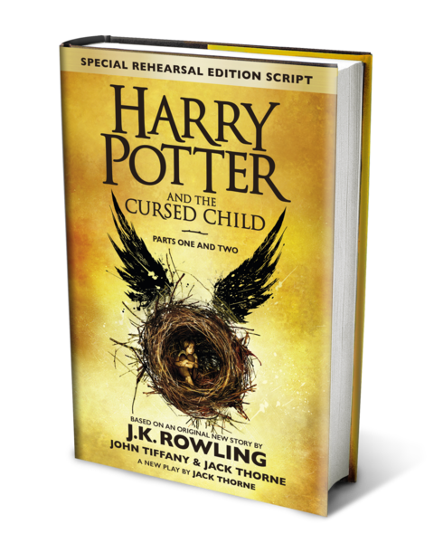

Autor: J.K. Rowling
Año de publicacion: publicado en el año 1997
Editorial: Bloomsbury en el Reino Unido y por Scholastic en los Estados Unidos.
Harry Potter y la Piedra Filosofal es el primer libro de la saga que sigue las aventuras de Harry Potter...
"Harry Potter y la piedra filosofal" es el primer libro de la famosa serie de novelas escrita por J.K. Rowling. Publicado en 1997, introduce a los lectores al mundo mágico y a los personajes memorables que se han convertido en iconos de la literatura y la cultura popular. La historia sigue a Harry Potter, un niño huérfano que descubre que es un mago el día de su undécimo cumpleaños. La trama se inicia cuando Harry, quien ha vivido una vida ordinaria con sus abusivos parientes, los Dursley, recibe una carta que cambia su vida. Esta carta lo lleva a descubrir su legado mágico y su aceptación en el Colegio Hogwarts de Magia y Hechicería. Harry se entera de su conexión con el mundo mágico y de su fama como el "Niño que sobrevivió", el único que ha sobrevivido al ataque mortal del mago tenebroso Lord Voldemort. En Hogwarts, Harry forma amistades duraderas, como con Ron Weasley y Hermione Granger, y descubre que hay mucho más en el mundo mágico de lo que jamás imaginó. La trama central gira en torno a la búsqueda de la legendaria Piedra Filosofal, un objeto que otorga inmortalidad, y los esfuerzos de Harry y sus amigos por protegerla de aquellos que desean utilizarla con fines oscuros.